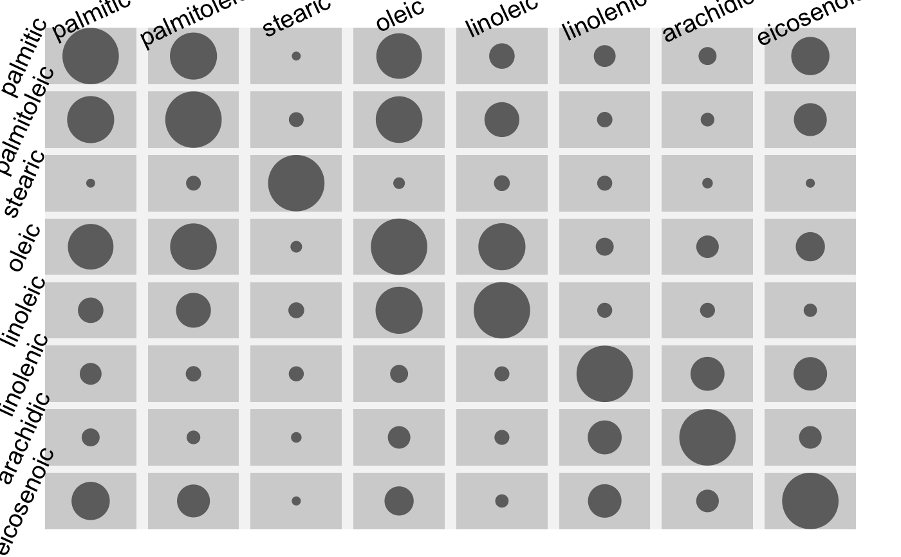

dcor.RdAn efficient implementation of the distance correlation for two variables with the additional option to weight the observations.
The main application for the weights is to use frequencies according to ordinal variables which can be represented by a contingency table (wdcor.table)).
Another idea is to make the distance correlation more robust by assigning small weights to observations which are far from the rest of the data.
For large datasets the distance correlation is often said to be too inefficient to be of any great use. The function approx.dcor offers a pretty good approximation of the distance correlation via binning and wdcor.table).
wdcor.data.frame computes a distance correlation matrix. Factor variables are transformed to integer via data.matrix.
wdcor(x,…) # S3 method for default wdcor(x,y,w = NULL,ep = 1, approx = FALSE, n = 50,na.rm = TRUE, …) # S3 method for table wdcor(x,ep = 1,…) # S3 method for data.frame wdcor(x, w = NULL, ep = 1, approx = FALSE, n = 50, …)
| x | A data crosstable or a numeric vector. |
|---|---|
| y | A numeric vector. |
| w | Weights, typically frequencies. The default weights all cases the same, which leads to the standard distance correlation. |
| ep | The euclidean (absolute) distances can be taken to the power of |
| approx | Whether or not to use approx.dcor instead of wdcor. This is automatically chosen for vectors with more than 20000 entries. |
| n | The number of bins used by approx.dcor. |
| na.rm | Whether or nor to remove missing values. |
| … | dots. |
The correlation value which is between 0 and 1.
Automatically uses an approximation for vectors larger than 20000 entries!
Szekely, G. J. Rizzo, M. L. and Bakirov, N. K. (2007). "Measuring and testing independence by correlation of distances", Annals of Statistics, 35/6, 2769-2794
# repeat and change N for different results and computation times. N <- 2000 x1 <- rnorm(N,mean=10,sd=3) x2 <- runif(N,0,40) x3 <- rnorm(N,mean=30,sd=4) x <- sample(c(x1,x2,x3),N) y <- rnorm(1,sd=0.0001)*(x-mean(x))^4+ rnorm(1,sd=0.01)*(x-mean(x))^3 y <- y+ rnorm(1,sd=0.1)*(x-mean(x))^2 y <- y+ rnorm(1)*(x-mean(x))+rnorm(N,sd=runif(N,3,10)) y <- y+ runif(N,0,20)*sin(abs(scale(x))*2*pi) require(scales) plot(x,y,pch=19,col=alpha("black",0.2))#> user system elapsed #> 0.310 0.029 0.368#> user system elapsed #> 0.332 0.014 0.396dd#> [1] 0.1457353dde#> [1] 0.07414604# NOT RUN { y <- diamonds$price x <- diamonds$carat length(x) # 53940 # auto approximation via approx.dcor wdcor(x,y) # the weighted distance correlation is also applicable to # discrete data: A <- arsim(2000,c(12,12),4,0.1) wdcor(A) wdcor(optile(A)) wdcor(optile(A, fun = "distcor")) # kernel density weights: kd <- kde2d(x,y,n=50) xy <- expand.grid(kd$x,kd$y) wdcor(xy[,1],xy[,2], w = kd$z) # this is the approximate distance correlation for the 2D density estimate # }#> viewport[base]